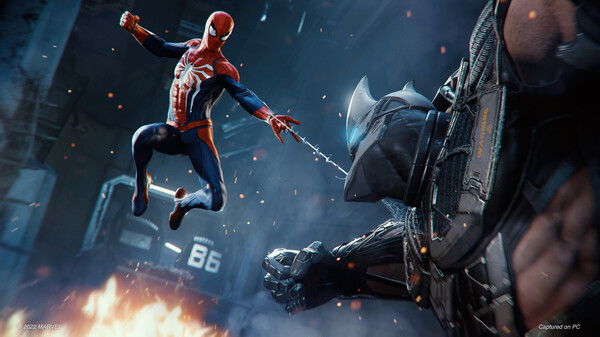
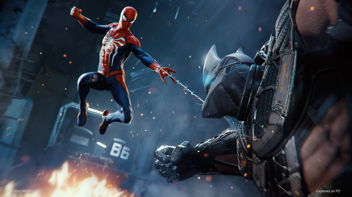

Marvel's Spider-Man Remastered
Desarrolladora: Insomniac Games & Nixxes Software
Fecha de lanzamiento: 18/08/2022
Produccion: PlayStation PC LSS
Plataformas: PS5, Steam, Epic Games


| Calificación |
|---|
| 87 |
Descripcion
Marvel's Spider-Man es un videojuego de acción y aventuras con un estilo jugable de mundo abierto, que permite al jugador desplazarse de un lugar a otro con total libertad de movimientos y que tiene por escenario donde de desarrolla la historia, la ciudad de Nueva York. El juego está desarrollado por Imsomniac Games, creadores de juegos como Spyro, Ratchet & Clank o Sunset Overdrive, entre otros y además está producido por Sony como videojuego exclusivo de PlayStation 4.
La historia, totalmente original y nunca antes contada, nos pone en la piel de un Peter Parker mucho más experimentado y maduro que deberá lidiar con los problemas que suponen el tener que salvar a una ciudad entera como Manhattan de las atrocidades de los peores criminales y compatibilizarlo con su vida personal.
Respecto al gameplay, Spider-Man hace gala de un extenso y variado sistema de combos y habilidades con los que acabar con los enemigos y ofrece una libertad total de movimientos para recorrer los escenarios y que nos permitirán trepar y correr por los edificios de una forma muy fluída, mientras hacemos uso de las telarañas para desplazarnos a lo largo de la ciudad de Manhattan.
 

Requisitos del sistema
Bajo:
- Tarjeta gráfica: NVIDIA GeForce GTX 950 o equivalente de AMD. 720p y 30FPS
- Procesador: Inte Core i3-4160 o equivalente de AMD.
- RAM: 8 GB.
- Sistema Operativo: Windows 10 64-bit
- Espacio: 75 GB HDD.
Medio:
- Tarjeta gráfica: NVIDIA GeForce GTX 1060 6GB o AMD Radeon RX 580. 1080p y 60FPS.
- Procesador: Intel Core i5-4670 o AMD Ryzen 5 1 600.
- RAM: 16 GB.
- Sistema Operativo: Windows 10 64-bit.
- Espacio: 75 GB HDD.
Alto:
- Tarjeta gráfica: NVIDIA GeForce RTX 3070 o AMD Radeon RX 6800 XT. 4K y 60FPS.
- Procesador: Intel Core i5-11400 o AMD Ryzen 5 3600.
- RAM: 16 GB.
- Sistema Operativo: Windows 10 64-bit.
- Espacio: 75 GB SSD.
Ultra Ray Tracing 4k SUPER RGB GAMER:
- Tarjeta gráfica: NVIDIA GeForce RTX 3080 o AMD Radeon RX 6950 XT. 4K y 60FPS.
- Procesador: Inte Core i7-12700K o AMD Ryzen 9 5900X.
- RAM: 32 GB.
- Sistema Operativo: Windows 10 64-bit.
- Espacio: 75 GB SSD.